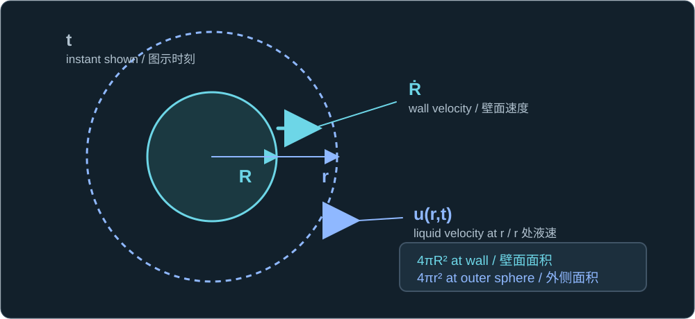
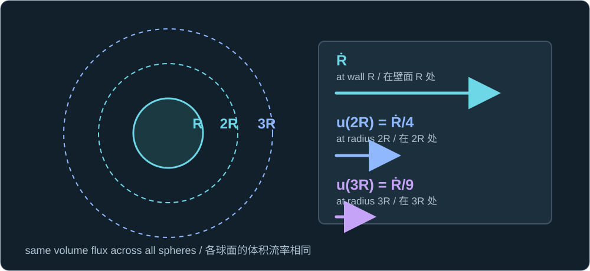

Historical lesson/review. Use the complete textbook course for the current study order. Former Chapters 4 and 5 are now Appendixes A and B.
历史课程／复习材料。当前学习顺序请使用完整教材课程。原第四、五章现为附录 A、B。
Now suppose a bubble already exists. Assume its motion is spherical, the surrounding liquid is incompressible, and no mass crosses the bubble interface. Write its radius as R(t). A dot above R means a time derivative: Ṙ is signed wall velocity (positive outward), and R̈ is wall acceleration.
现在假设气泡已经存在。设气泡保持球形、周围液体不可压缩，并且没有质量穿过气泡界面。将气泡半径记为 R(t)。R 上方的点表示对时间求导：Ṙ 是带符号的壁面速度（向外为正），R̈ 是壁面加速度。
Count the volume crossing each sphere
计算穿过每个球面的体积流量
At the bubble wall, surface area multiplied by wall speed gives the volume flow rate. At any surrounding radius r > R, the area is larger but the same volume per second must cross it. Otherwise liquid would accumulate or disappear between the two spheres.
在气泡壁面，球面面积乘以壁面速度就是体积流率。在外侧任意半径 r > R 处，球面面积更大，但每秒穿过的液体体积必须相同。否则，液体就会在两个球面之间凭空积累或消失。
4πR²Ṙ = 4πr²u(r,t)

At the wall R, area 4πR² moves at Ṙ. At outer radius r, area 4πr² carries liquid at u(r,t), at the same instant t.
在壁面 R 处，面积 4πR² 以 Ṙ 运动；在外侧半径 r 处，面积 4πr² 的液体速度为 u(r,t)，两者对应同一时刻 t。
u(r,t) = (R/r)²Ṙ

The wall speed Ṙ and outer liquid speed u(r,t) are attached to their concentric surfaces; greater r means lower radial speed.
壁面速度 Ṙ 与外侧液体速度 u(r,t) 分别标在对应球面；r 越大，径向速度越低。
Here u(r,t) is radial liquid velocity. At r = 2R, the spherical area is four times the wall area, so the liquid speed is one quarter of the wall speed. At r = 3R, it is one ninth. During collapse, Ṙ and u are negative: the same formula describes inward flow.
其中 u(r,t) 是液体的径向速度。在 r = 2R 处，球面面积是壁面面积的四倍，因此液体速度是壁面速度的四分之一；在 r = 3R 处则是九分之一。塌缩时，Ṙ 与 u 为负值：同一公式描述向内流动。
The arrows are schematic. The factor of four comes from the area of a sphere increasing with the square of its radius.
箭头仅为示意。速度变为四分之一，是因为球面面积随半径的平方增大。

The worked locations 2R and 3R are marked on the liquid spheres, with their velocity ratios beside them.
例题中的 2R 和 3R 标在对应的液体球面上，旁边给出了各处的速度比例。
This inverse-square law is for radial liquid velocity in the stated spherical, incompressible flow. A nearby wall changes the flow geometry; evaporation or condensation changes the interface mass balance. We will use this velocity field to derive the liquid inertia in the next lesson.
这个平方反比规律描述的是上述球对称、不可压缩流动中的液体径向速度。邻近固壁会改变流动几何；蒸发或凝结会改变界面的质量平衡。下一课将用这一速度场推导液体惯性项。
One check
一道检查题
A spherical bubble wall moves outward at 8 m/s. Under this model, what are the speed and direction of the liquid at r = 2R, and why?
一个球形气泡的壁面以 8 m/s 向外运动。在本课模型下，r = 2R 处液体的速度大小和方向是什么？为什么？